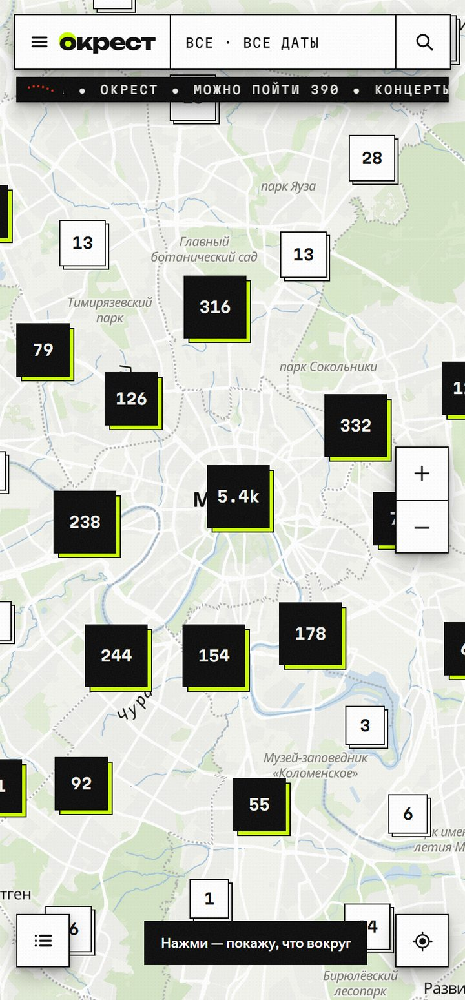
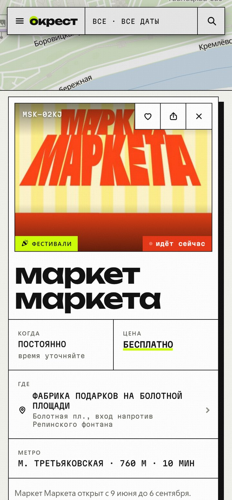
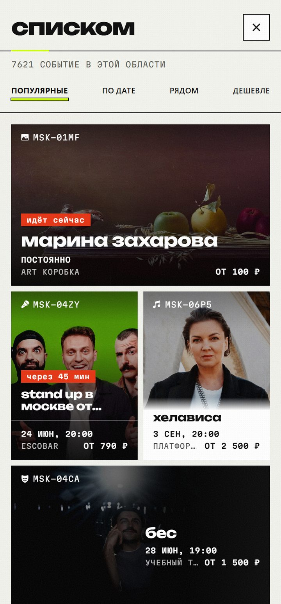

Открываешь Окрест — и видишь, что рядом: сегодня, завтра или на выходных. Концерты, выставки, стендап, кино и места, о которых ты не знал.
Без долгого поиска по десяткам сайтов и пабликов — просто карта с тем, что рядом.



От Москвы до Омска: выбираешь город — и видишь афишу на карте, что рядом сегодня, завтра или на выходных.
Карта событий в твоём городе — прямо в Telegram. Открываешь и видишь, куда можно сходить: рядом, сегодня или в ближайшие дни.
Сейчас в 16 городах: Москва, Санкт-Петербург, Екатеринбург, Новосибирск, Казань, Нижний Новгород, Челябинск, Самара, Уфа, Ростов-на-Дону, Краснодар, Пермь, Воронеж, Волгоград, Красноярск и Омск. Новые добавляем постепенно.
Бесплатно и без рекламы. Билеты не продаём и комиссию не берём — просто показываем, что вокруг.
Собираем из сотен источников — площадки, агрегаторы, официальные каналы — и обновляем каждый день. Прямо сейчас их больше 20 000.
Сохрани событие в избранное — напомним за пару часов до начала. И друзей можно позвать с собой.
Нет. Открываешь @okrestmap_bot в Telegram — карта запускается прямо внутри, качать ничего не надо.